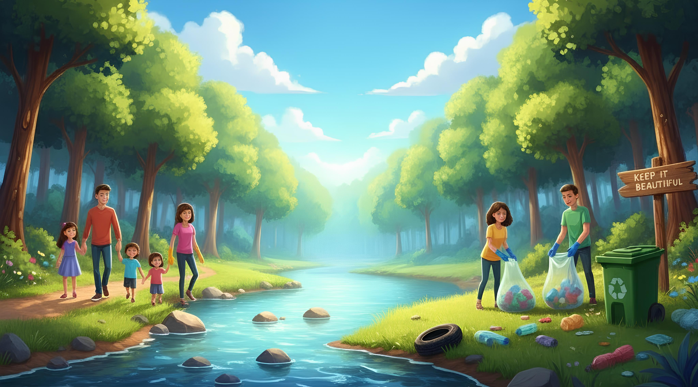
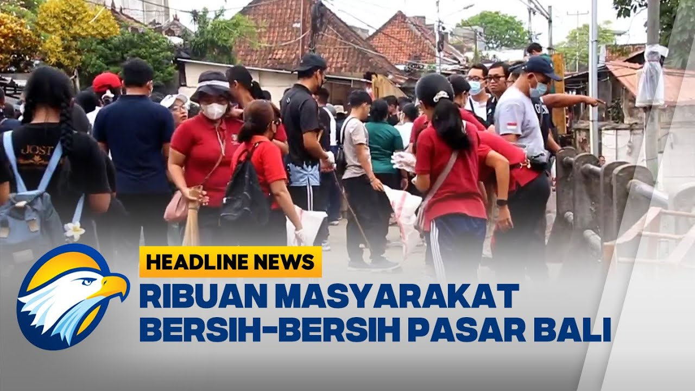
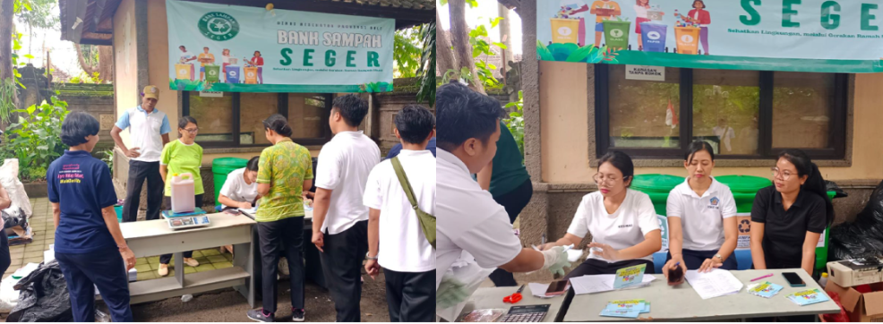
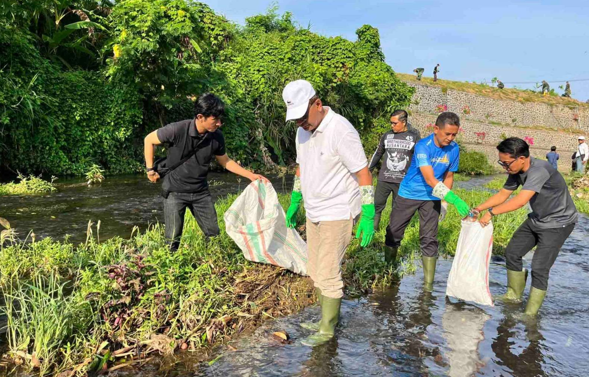
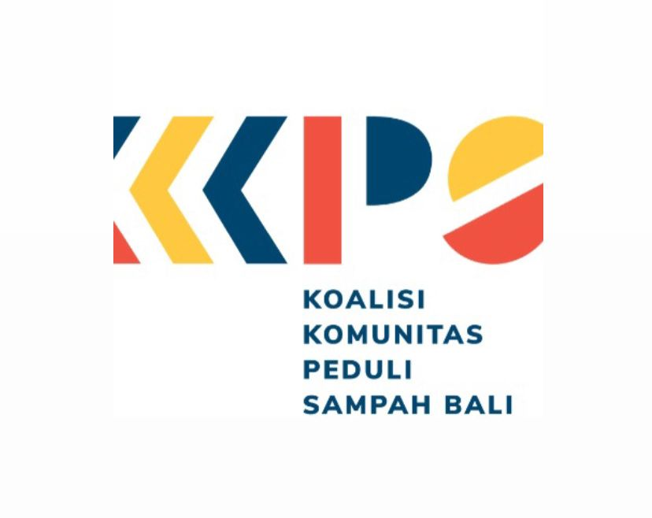

Belajar memilah, mengolah, dan
mengurangi sampah dengan cara
yang mudah dan menyenangkan.

Sampah adalah sisa kegiatan manusia atau proses alam yang sudah tidak digunakan lagi. Pengelolaan yang tepat sangat penting agar tidak mencemari lingkungan.
Sampah organik: sisa makanan, daun kering.
Sampah anorganik: plastik, kaca, logam.
Sampah B3: baterai, obat kadaluarsa.
Indonesia menghasilkan lebih dari 60 juta ton sampah setiap tahun, dan sekitar 17% di antaranya berasal dari plastik sekali pakai.
Pisahkan sampah sesuai jenisnya, daur ulang yang bisa digunakan ulang, dan komposkan sampah organik agar menjadi pupuk alami.
Data berikut menggambarkan kondisi umum pengelolaan sampah di beberapa kabupaten di Provinsi Bali.
Persentase Jenis Sampah di Bali
Jumlah Sampah per Kabupaten (ton/hari)
Tingkat Daur Ulang di Bali per Tahun
Dokumentasi kegiatan dan aksi nyata peduli lingkungan 🌿

Kegiatan ini dilakukan pada tanggal 14 September 2025 agar pasar dapat berfungsi kembali seperti sedia kala.

Kegiatan ini merupakan strategi pengelolaan sampah anorganik yang bersumber dari hasil kegiatan institusi maupun rumah tangga.

Pemkab Buleleng menggelar kegiatan penanaman pohon dan bersih sungai di Sungai Banyumala, Kelurahan Banyuasri, Minggu (26/10/2025).
Gabung bareng pegiat lingkungan di Bali dan mulai aksi kecilmu hari ini! 🌍

Bersama komunitas ini, kamu bisa ikut kegiatan bersih pantai, edukasi sampah, dan kampanye hijau di seluruh Bali.
Gabung Sekarang 💬